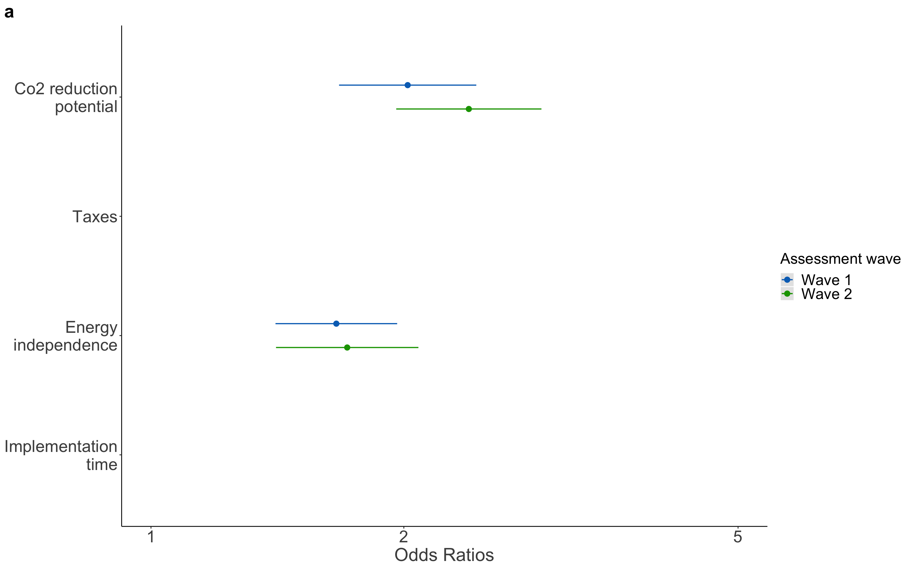
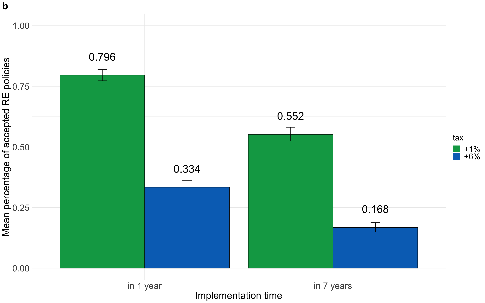
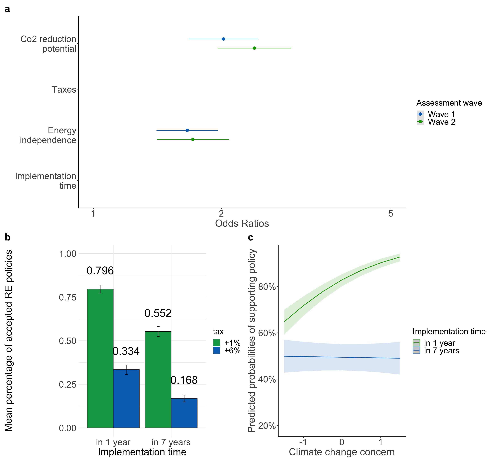

| decision | |||
|---|---|---|---|
| Predictors | Odds Ratios | CI | p |
| (Intercept) | 4.35 | 2.11 – 8.96 | <0.001 |
| co2-30% CO2 | 1.49 | 1.35 – 1.66 | <0.001 |
| tax (1% vs 6%): +6% | 0.08 | 0.07 – 0.09 | <0.001 |
|
energyindependence (10% vs 20%): +20% |
1.30 | 1.17 – 1.44 | <0.001 |
|
implementation (in 1 vs 7 years): in 7 years |
0.25 | 0.22 – 0.28 | <0.001 |
| age | 0.99 | 0.98 – 0.99 | 0.001 |
| gender: male | 1.05 | 0.81 – 1.37 | 0.712 |
| income.wave1<1’500€ <3’100CHF | 1.13 | 0.74 – 1.73 | 0.569 |
| income.wave1> 4’000€ >5’900 CHF | 1.05 | 0.72 – 1.54 | 0.787 |
| income.wave12’500- 4’000€ <4’300- 5’899CHF | 0.91 | 0.63 – 1.32 | 0.624 |
| country: Switzerland | 1.14 | 0.87 – 1.50 | 0.326 |
|
education: obligatory school |
1.45 | 0.82 – 2.55 | 0.201 |
| education: middle school | 1.79 | 1.01 – 3.19 | 0.047 |
| education: degree | 1.79 | 1.01 – 3.18 | 0.045 |
| Random Effects | |||
| σ2 | 3.29 | ||
| τ00 m | 2.23 | ||
| ICC | 0.40 | ||
| N m | 607 | ||
| Observations | 9712 | ||
| Marginal R2 / Conditional R2 | 0.292 / 0.578 | ||
| decision | |||
|---|---|---|---|
| Predictors | Odds Ratios | CI | p |
| (Intercept) | 8.40 | 2.32 – 30.51 | 0.001 |
| co2-30% CO2 | 2.07 | 1.72 – 2.49 | <0.001 |
| tax (1% vs 6%): +6% | 0.01 | 0.00 – 0.01 | <0.001 |
|
energyindependence (10% vs 20%): +20% |
1.66 | 1.41 – 1.96 | <0.001 |
|
implementation (in 1 vs 7 years): in 7 years |
0.11 | 0.07 – 0.16 | <0.001 |
| age | 0.98 | 0.96 – 0.99 | 0.006 |
| gender: male | 1.01 | 0.64 – 1.59 | 0.969 |
| income.wave1<1’500€ <3’100CHF | 1.35 | 0.65 – 2.82 | 0.416 |
| income.wave1> 4’000€ >5’900 CHF | 1.12 | 0.58 – 2.15 | 0.734 |
| income.wave12’500- 4’000€ <4’300- 5’899CHF | 0.89 | 0.47 – 1.68 | 0.714 |
| country: Switzerland | 1.38 | 0.87 – 2.21 | 0.174 |
|
education: obligatory school |
1.76 | 0.67 – 4.63 | 0.255 |
| education: middle school | 2.90 | 1.07 – 7.83 | 0.036 |
| education: degree | 3.01 | 1.13 – 8.05 | 0.028 |
| Random Effects | |||
| σ2 | 3.29 | ||
| τ00 m | 8.23 | ||
| τ11 m.co2-30% CO2 | 1.13 | ||
| τ11 m.tax+6% | 14.98 | ||
| τ11 m.energieabhaengigkeit+20% | 0.31 | ||
| τ11 m.zeitpunktin 7 years | 13.63 | ||
| ρ01 | -0.15 | ||
| -0.24 | |||
| -0.16 | |||
| -0.29 | |||
| ICC | 0.81 | ||
| N m | 607 | ||
| Observations | 9712 | ||
| Marginal R2 / Conditional R2 | 0.311 / 0.871 | ||
| decision | |||
|---|---|---|---|
| Predictors | Odds Ratios | CI | p |
| (Intercept) | 8.64 | 6.23 – 11.99 | <0.001 |
| co2-30% CO2 | 2.02 | 1.67 – 2.44 | <0.001 |
| tax (1% vs 6%): +6% | 0.01 | 0.00 – 0.01 | <0.001 |
|
energyindependence (10% vs 20%): +20% |
1.66 | 1.41 – 1.96 | <0.001 |
|
implementation (in 1 vs 7 years): in 7 years |
0.11 | 0.08 – 0.16 | <0.001 |
| Random Effects | |||
| σ2 | 3.29 | ||
| τ00 m | 7.82 | ||
| τ11 m.co2-30% CO2 | 1.22 | ||
| τ11 m.tax+6% | 14.81 | ||
| τ11 m.energieabhaengigkeit+20% | 0.35 | ||
| τ11 m.zeitpunktin 7 years | 13.23 | ||
| ρ01 | -0.10 | ||
| -0.21 | |||
| -0.11 | |||
| -0.26 | |||
| ICC | 0.82 | ||
| N m | 607 | ||
| Observations | 9712 | ||
| Marginal R2 / Conditional R2 | 0.296 / 0.870 | ||
| decision | |||
|---|---|---|---|
| Predictors | Odds Ratios | CI | p |
| (Intercept) | 7.28 | 3.56 – 14.85 | <0.001 |
| co2-30% CO2 | 1.51 | 1.36 – 1.68 | <0.001 |
| tax (1% vs 6%): +6% | 0.07 | 0.06 – 0.08 | <0.001 |
|
energyindependence (10% vs 20%): +20% |
1.30 | 1.17 – 1.44 | <0.001 |
|
implementation (in 1 vs 7 years): in 7 years |
0.25 | 0.22 – 0.28 | <0.001 |
| concern.scaled | 2.29 | 2.02 – 2.59 | <0.001 |
| age | 0.98 | 0.97 – 0.99 | <0.001 |
| gender: male | 1.17 | 0.90 – 1.52 | 0.233 |
| income.wave1<1’500€ <3’100CHF | 1.12 | 0.74 – 1.70 | 0.589 |
| income.wave1> 4’000€ >5’900 CHF | 0.95 | 0.66 – 1.38 | 0.806 |
| income.wave12’500- 4’000€ <4’300- 5’899CHF | 0.86 | 0.60 – 1.24 | 0.411 |
| country: Switzerland | 1.11 | 0.85 – 1.44 | 0.449 |
|
education: obligatory school |
1.21 | 0.69 – 2.11 | 0.507 |
| education: middle school | 1.32 | 0.75 – 2.32 | 0.340 |
| education: degree | 1.43 | 0.81 – 2.50 | 0.216 |
| zeitpunktin 7 years:concern.scaled | 0.47 | 0.43 – 0.52 | <0.001 |
| Random Effects | |||
| σ2 | 3.29 | ||
| τ00 m | 2.10 | ||
| ICC | 0.39 | ||
| N m | 607 | ||
| Observations | 9712 | ||
| Marginal R2 / Conditional R2 | 0.351 / 0.604 | ||
| decision | |||
|---|---|---|---|
| Predictors | Odds Ratios | CI | p |
| (Intercept) | 14.18 | 4.29 – 46.84 | <0.001 |
| co2-30% CO2 | 2.01 | 1.67 – 2.42 | <0.001 |
| tax (1% vs 6%): +6% | 0.01 | 0.00 – 0.01 | <0.001 |
|
energyindependence (10% vs 20%): +20% |
1.69 | 1.43 – 2.00 | <0.001 |
|
implementation (in 1 vs 7 years): in 7 years |
0.11 | 0.08 – 0.16 | <0.001 |
| concern.scaled | 3.45 | 2.77 – 4.31 | <0.001 |
| age | 0.98 | 0.96 – 0.99 | 0.001 |
| gender: male | 1.28 | 0.84 – 1.95 | 0.258 |
| income.wave1<1’500€ <3’100CHF | 1.28 | 0.65 – 2.52 | 0.467 |
| income.wave1> 4’000€ >5’900 CHF | 0.97 | 0.53 – 1.77 | 0.918 |
| income.wave12’500- 4’000€ <4’300- 5’899CHF | 0.76 | 0.42 – 1.38 | 0.373 |
| country: Switzerland | 1.22 | 0.79 – 1.88 | 0.367 |
|
education: obligatory school |
1.34 | 0.55 – 3.28 | 0.525 |
| education: middle school | 1.84 | 0.73 – 4.59 | 0.193 |
| education: degree | 2.06 | 0.83 – 5.09 | 0.119 |
| zeitpunktin 7 years:concern.scaled | 0.33 | 0.25 – 0.45 | <0.001 |
| Random Effects | |||
| σ2 | 3.29 | ||
| τ00 m | 7.52 | ||
| τ11 m.co2-30% CO2 | 1.11 | ||
| τ11 m.tax+6% | 14.42 | ||
| τ11 m.energieabhaengigkeit+20% | 0.29 | ||
| τ11 m.zeitpunktin 7 years | 11.42 | ||
| ρ01 | -0.30 | ||
| -0.39 | |||
| -0.20 | |||
| -0.19 | |||
| ICC | 0.79 | ||
| N m | 607 | ||
| Observations | 9712 | ||
| Marginal R2 / Conditional R2 | 0.354 / 0.864 | ||
| CO2 attribute importance | |||
|---|---|---|---|
| Predictors | Estimates | CI | p |
| (Intercept) | 0.242 | -0.048 – 0.533 | 0.102 |
| gender [male] | 0.019 | -0.072 – 0.110 | 0.678 |
| age | -0.002 | -0.005 – 0.001 | 0.142 |
| income<1’500- 2’499€ 3’100-4’299CHF | 0.009 | -0.135 – 0.153 | 0.903 |
|
income [2’500- 4’000€ <4’300- 5’899CHF] |
-0.003 | -0.141 – 0.134 | 0.961 |
|
income [> 4’000€ >5’900 CHF] |
0.050 | -0.088 – 0.188 | 0.476 |
| country [Switzerland] | 0.012 | -0.080 – 0.104 | 0.795 |
|
education [obligatory school] |
-0.061 | -0.252 – 0.131 | 0.532 |
| education [middle school] | 0.028 | -0.166 – 0.223 | 0.774 |
| education [degree] | -0.001 | -0.194 – 0.192 | 0.993 |
| climate concern | 0.115 | 0.077 – 0.153 | <0.001 |
| Observations | 607 | ||
| R2 / R2 adjusted | 0.070 / 0.054 | ||
| CO2 attribute importance | |||
|---|---|---|---|
| Predictors | Estimates | CI | p |
| (Intercept) | 0.848 | 0.662 – 1.034 | <0.001 |
| gender: male | 0.001 | -0.087 – 0.089 | 0.988 |
| age | -0.003 | -0.006 – -0.000 | 0.044 |
| income<1’500- 2’499€ 3’100-4’299CHF | -0.008 | -0.148 – 0.131 | 0.906 |
|
income: 2’500- 4’000€ <4’300- 5’899CHF |
-0.014 | -0.147 – 0.118 | 0.832 |
|
income: > 4’000€ >5’900 CHF |
0.041 | -0.089 – 0.172 | 0.531 |
| countrySwitzerland | -0.010 | -0.097 – 0.078 | 0.823 |
|
climate change concern (scaled) |
0.113 | 0.077 – 0.149 | <0.001 |
| Observations | 603 | ||
| R2 / R2 adjusted | 0.066 / 0.055 | ||
## vars n mean sd median trimmed mad min max range skew kurtosis se
## X1 1 1214 0.49 0.22 0.53 0.51 0.19 -0.09 0.91 1 -0.85 0.53 0.01## [1] -1.229591| CO2 attribute importance | |||
|---|---|---|---|
| Predictors | Estimates | CI | p |
| (Intercept) | 0.504 | 0.441 – 0.567 | <0.001 |
| wavewave2 | 0.000 | -0.022 – 0.023 | 0.995 |
| gender: male | 0.002 | -0.020 – 0.025 | 0.840 |
| age | -0.002 | -0.002 – -0.001 | <0.001 |
| income<1’500- 2’499€ 3’100-4’299CHF | 0.006 | -0.030 – 0.043 | 0.735 |
|
income: 2’500- 4’000€ <4’300- 5’899CHF |
0.009 | -0.026 – 0.044 | 0.610 |
|
income: > 4’000€ >5’900 CHF |
0.005 | -0.030 – 0.039 | 0.788 |
| countrySwitzerland | 0.023 | -0.001 – 0.046 | 0.055 |
|
education: obligatory school |
0.039 | -0.009 – 0.088 | 0.110 |
| education: middle school | 0.067 | 0.017 – 0.116 | 0.008 |
| education: degree | 0.062 | 0.013 – 0.111 | 0.013 |
|
climate change concern (scaled) |
0.077 | 0.068 – 0.087 | <0.001 |
| Observations | 1214 | ||
| R2 / R2 adjusted | 0.210 / 0.203 | ||
| CO2 attribute importance | |||
|---|---|---|---|
| Predictors | Estimates | CI | p |
| (Intercept) | 0.56 | 0.51 – 0.60 | <0.001 |
| gender: male | 0.00 | -0.02 – 0.02 | 0.974 |
| age | -0.00 | -0.00 – -0.00 | <0.001 |
| income<1’500- 2’499€ 3’100-4’299CHF | 0.01 | -0.03 – 0.04 | 0.682 |
|
income: 2’500- 4’000€ <4’300- 5’899CHF |
0.01 | -0.02 – 0.05 | 0.429 |
|
income: > 4’000€ >5’900 CHF |
0.01 | -0.02 – 0.05 | 0.420 |
| countrySwitzerland | 0.02 | 0.00 – 0.05 | 0.044 |
|
climate change concern (scaled) |
0.08 | 0.07 – 0.09 | <0.001 |
| Observations | 1214 | ||
| R2 / R2 adjusted | 0.204 / 0.200 | ||
| decision | |||
|---|---|---|---|
| Predictors | Odds Ratios | CI | p |
| (Intercept) | 4.23 | 4.23 – 4.23 | <0.001 |
| co2-30% CO2 | 1.45 | 1.45 – 1.45 | <0.001 |
| tax (1% vs 6%): +6% | 0.06 | 0.06 – 0.06 | <0.001 |
|
energyindependence (10% vs 20%): +20% |
1.35 | 1.35 – 1.35 | <0.001 |
|
implementation (in 1 vs 7 years): in 7 years |
0.22 | 0.22 – 0.22 | <0.001 |
| age | 0.99 | 0.98 – 0.99 | <0.001 |
| gender: male | 1.05 | 1.05 – 1.05 | <0.001 |
| income.wave2<1’500€ <3’100CHF | 0.95 | 0.95 – 0.95 | <0.001 |
| income.wave2> 4’000€ >5’900 CHF | 1.11 | 1.11 – 1.11 | <0.001 |
| income.wave22’500- 4’000€ <4’300- 5’899CHF | 1.07 | 1.06 – 1.07 | <0.001 |
| country: Switzerland | 1.44 | 1.43 – 1.44 | <0.001 |
|
education: obligatory school |
1.81 | 1.80 – 1.81 | <0.001 |
| education: middle school | 2.08 | 2.08 – 2.08 | <0.001 |
| education: degree | 1.91 | 1.91 – 1.91 | <0.001 |
| Random Effects | |||
| σ2 | 3.29 | ||
| τ00 m | 3.19 | ||
| ICC | 0.49 | ||
| N m | 607 | ||
| Observations | 9712 | ||
| Marginal R2 / Conditional R2 | 0.302 / 0.645 | ||
| decision | |||
|---|---|---|---|
| Predictors | Odds Ratios | CI | p |
| (Intercept) | 52.64 | 11.16 – 248.26 | <0.001 |
| co2-30% CO2 | 2.26 | 1.85 – 2.77 | <0.001 |
| tax (1% vs 6%): +6% | 0.00 | 0.00 – 0.01 | <0.001 |
|
energyindependence (10% vs 20%): +20% |
1.77 | 1.46 – 2.15 | <0.001 |
|
implementation (in 1 vs 7 years): in 7 years |
0.08 | 0.05 – 0.13 | <0.001 |
| age | 0.96 | 0.95 – 0.98 | <0.001 |
| gender: male | 0.98 | 0.56 – 1.71 | 0.943 |
| income.wave2<1’500€ <3’100CHF | 0.58 | 0.24 – 1.41 | 0.228 |
| income.wave2> 4’000€ >5’900 CHF | 0.73 | 0.34 – 1.61 | 0.441 |
| income.wave22’500- 4’000€ <4’300- 5’899CHF | 0.92 | 0.41 – 2.02 | 0.826 |
| country: Switzerland | 1.54 | 0.87 – 2.73 | 0.137 |
|
education: obligatory school |
1.32 | 0.41 – 4.32 | 0.642 |
| education: middle school | 1.95 | 0.58 – 6.49 | 0.278 |
| education: degree | 1.73 | 0.52 – 5.78 | 0.370 |
| Random Effects | |||
| σ2 | 3.29 | ||
| τ00 m | 11.61 | ||
| τ11 m.co2-30% CO2 | 1.10 | ||
| τ11 m.tax+6% | 19.26 | ||
| τ11 m.energieabhaengigkeit+20% | 1.10 | ||
| τ11 m.zeitpunktin 7 years | 16.42 | ||
| ρ01 | 0.26 | ||
| -0.26 | |||
| -0.28 | |||
| -0.17 | |||
| ICC | 0.85 | ||
| N m | 607 | ||
| Observations | 9712 | ||
| Marginal R2 / Conditional R2 | 0.311 / 0.900 | ||
| decision | |||
|---|---|---|---|
| Predictors | Odds Ratios | CI | p |
| (Intercept) | 13.18 | 8.85 – 19.64 | <0.001 |
| co2-30% CO2 | 2.39 | 1.96 – 2.92 | <0.001 |
| tax (1% vs 6%): +6% | 0.00 | 0.00 – 0.01 | <0.001 |
|
energyindependence (10% vs 20%): +20% |
1.71 | 1.41 – 2.08 | <0.001 |
|
implementation (in 1 vs 7 years): in 7 years |
0.09 | 0.06 – 0.13 | <0.001 |
| Random Effects | |||
| σ2 | 3.29 | ||
| τ00 m | 12.07 | ||
| τ11 m.co2-30% CO2 | 0.90 | ||
| τ11 m.tax+6% | 19.99 | ||
| τ11 m.energieabhaengigkeit+20% | 1.08 | ||
| τ11 m.zeitpunktin 7 years | 17.52 | ||
| ρ01 | 0.37 | ||
| -0.24 | |||
| -0.34 | |||
| -0.13 | |||
| ICC | 0.86 | ||
| N m | 607 | ||
| Observations | 9712 | ||
| Marginal R2 / Conditional R2 | 0.292 / 0.902 | ||
| decision | |||
|---|---|---|---|
| Predictors | Odds Ratios | CI | p |
| (Intercept) | 6.43 | 6.43 – 6.44 | <0.001 |
| co2-30% CO2 | 1.46 | 1.46 – 1.46 | <0.001 |
| tax (1% vs 6%): +6% | 0.05 | 0.05 – 0.05 | <0.001 |
|
energyindependence (10% vs 20%): +20% |
1.36 | 1.36 – 1.36 | <0.001 |
|
implementation (in 1 vs 7 years): in 7 years |
0.22 | 0.22 – 0.22 | <0.001 |
| concern.scaled | 2.65 | 2.64 – 2.65 | <0.001 |
| age | 0.98 | 0.98 – 0.98 | <0.001 |
| gender: male | 1.19 | 1.19 – 1.20 | <0.001 |
| income.wave2<1’500€ <3’100CHF | 0.99 | 0.99 – 0.99 | <0.001 |
| income.wave2> 4’000€ >5’900 CHF | 1.12 | 1.12 – 1.13 | <0.001 |
| income.wave22’500- 4’000€ <4’300- 5’899CHF | 1.20 | 1.20 – 1.20 | <0.001 |
| country: Switzerland | 1.44 | 1.44 – 1.44 | <0.001 |
|
education: obligatory school |
1.49 | 1.48 – 1.49 | <0.001 |
| education: middle school | 1.43 | 1.43 – 1.43 | <0.001 |
| education: degree | 1.40 | 1.40 – 1.40 | <0.001 |
| zeitpunktin 7 years:concern.scaled | 0.43 | 0.43 – 0.43 | <0.001 |
| Random Effects | |||
| σ2 | 3.29 | ||
| τ00 m | 2.95 | ||
| ICC | 0.47 | ||
| N m | 607 | ||
| Observations | 9712 | ||
| Marginal R2 / Conditional R2 | 0.374 / 0.670 | ||
| decision | |||
|---|---|---|---|
| Predictors | Odds Ratios | CI | p |
| (Intercept) | 50.44 | 11.67 – 218.01 | <0.001 |
| co2-30% CO2 | 2.33 | 1.90 – 2.87 | <0.001 |
| tax (1% vs 6%): +6% | 0.00 | 0.00 – 0.01 | <0.001 |
|
energyindependence (10% vs 20%): +20% |
1.80 | 1.48 – 2.19 | <0.001 |
|
implementation (in 1 vs 7 years): in 7 years |
0.08 | 0.05 – 0.13 | <0.001 |
| concern.scaled | 4.48 | 3.44 – 5.85 | <0.001 |
| age | 0.96 | 0.95 – 0.98 | <0.001 |
| gender: male | 1.37 | 0.81 – 2.32 | 0.239 |
| income.wave2<1’500€ <3’100CHF | 0.65 | 0.28 – 1.51 | 0.318 |
| income.wave2> 4’000€ >5’900 CHF | 0.80 | 0.38 – 1.67 | 0.546 |
| income.wave22’500- 4’000€ <4’300- 5’899CHF | 0.99 | 0.47 – 2.09 | 0.977 |
| country: Switzerland | 1.41 | 0.82 – 2.41 | 0.213 |
|
education: obligatory school |
1.53 | 0.50 – 4.69 | 0.455 |
| education: middle school | 1.36 | 0.44 – 4.26 | 0.596 |
| education: degree | 1.46 | 0.47 – 4.56 | 0.515 |
| zeitpunktin 7 years:concern.scaled | 0.34 | 0.24 – 0.47 | <0.001 |
| Random Effects | |||
| σ2 | 3.29 | ||
| τ00 m | 10.82 | ||
| τ11 m.co2-30% CO2 | 1.21 | ||
| τ11 m.tax+6% | 20.09 | ||
| τ11 m.energieabhaengigkeit+20% | 1.09 | ||
| τ11 m.zeitpunktin 7 years | 15.72 | ||
| ρ01 | -0.02 | ||
| -0.36 | |||
| -0.32 | |||
| -0.04 | |||
| ICC | 0.85 | ||
| N m | 607 | ||
| Observations | 9712 | ||
| Marginal R2 / Conditional R2 | 0.363 / 0.902 | ||

| decision | |||
|---|---|---|---|
| Predictors | Odds Ratios | CI | p |
| (Intercept) | 4.10 | 2.23 – 7.53 | <0.001 |
| wave Wave 2 | 1.05 | 0.97 – 1.12 | 0.223 |
| co2-30% CO2 | 1.42 | 1.32 – 1.53 | <0.001 |
| tax [+6%] | 0.08 | 0.08 – 0.09 | <0.001 |
|
energieabhaengigkeit [+20%] |
1.28 | 1.19 – 1.38 | <0.001 |
| zeitpunkt [in 7 years] | 0.26 | 0.25 – 0.29 | <0.001 |
| country [Switzerland] | 1.24 | 0.99 – 1.57 | 0.064 |
| age | 0.99 | 0.98 – 0.99 | <0.001 |
| gender [male] | 1.01 | 0.81 – 1.27 | 0.936 |
|
education [obligatory school] |
1.50 | 0.92 – 2.44 | 0.103 |
| education [middle school] | 1.77 | 1.08 – 2.89 | 0.024 |
| education [degree] | 1.72 | 1.06 – 2.81 | 0.029 |
| income<1’500- 2’499€ 3’100-4’299CHF | 0.93 | 0.73 – 1.18 | 0.530 |
|
income [2’500- 4’000€ <4’300- 5’899CHF] |
0.95 | 0.73 – 1.22 | 0.675 |
|
income [> 4’000€ >5’900 CHF] |
1.01 | 0.76 – 1.33 | 0.967 |
| Random Effects | |||
| σ2 | 3.29 | ||
| τ00 m | 1.76 | ||
| ICC | 0.35 | ||
| N m | 607 | ||
| Observations | 19424 | ||
| Marginal R2 / Conditional R2 | 0.295 / 0.541 | ||
| decision | |||
|---|---|---|---|
| Predictors | Odds Ratios | CI | p |
| (Intercept) | 6.98 | 3.12 – 15.62 | <0.001 |
| wave Wave 2 | 1.07 | 0.98 – 1.17 | 0.122 |
| co2-30% CO2 | 1.68 | 1.52 – 1.86 | <0.001 |
| tax [+6%] | 0.03 | 0.02 – 0.04 | <0.001 |
|
energieabhaengigkeit [+20%] |
1.46 | 1.33 – 1.60 | <0.001 |
| zeitpunkt [in 7 years] | 0.20 | 0.16 – 0.25 | <0.001 |
| country [Switzerland] | 1.41 | 1.04 – 1.91 | 0.026 |
| age | 0.98 | 0.97 – 0.99 | <0.001 |
| gender [male] | 0.97 | 0.72 – 1.30 | 0.844 |
|
education [obligatory school] |
1.38 | 0.74 – 2.59 | 0.312 |
| education [middle school] | 1.69 | 0.89 – 3.22 | 0.111 |
| education [degree] | 1.67 | 0.89 – 3.16 | 0.112 |
| income<1’500- 2’499€ 3’100-4’299CHF | 0.93 | 0.70 – 1.25 | 0.650 |
|
income [2’500- 4’000€ <4’300- 5’899CHF] |
0.99 | 0.72 – 1.37 | 0.965 |
|
income [> 4’000€ >5’900 CHF] |
1.03 | 0.73 – 1.46 | 0.863 |
| Random Effects | |||
| σ2 | 3.29 | ||
| τ00 m | 3.71 | ||
| τ11 m.co2-30% CO2 | 0.21 | ||
| τ11 m.tax+6% | 6.29 | ||
| τ11 m.energieabhaengigkeit+20% | 0.08 | ||
| τ11 m.zeitpunktin 7 years | 5.44 | ||
| ρ01 | 0.34 | ||
| -0.17 | |||
| -0.00 | |||
| -0.38 | |||
| ICC | 0.65 | ||
| N m | 607 | ||
| Observations | 19424 | ||
| Marginal R2 / Conditional R2 | 0.300 / 0.754 | ||
| decision | |||
|---|---|---|---|
| Predictors | Odds Ratios | CI | p |
| (Intercept) | 4.94 | 4.05 – 6.01 | <0.001 |
| wave Wave 2 | 1.08 | 0.99 – 1.17 | 0.098 |
| co2-30% CO2 | 1.69 | 1.53 – 1.87 | <0.001 |
| tax [+6%] | 0.03 | 0.02 – 0.04 | <0.001 |
|
energieabhaengigkeit [+20%] |
1.45 | 1.32 – 1.60 | <0.001 |
| zeitpunkt [in 7 years] | 0.20 | 0.16 – 0.25 | <0.001 |
| Random Effects | |||
| σ2 | 3.29 | ||
| τ00 m | 3.66 | ||
| τ11 m.co2-30% CO2 | 0.22 | ||
| τ11 m.tax+6% | 6.27 | ||
| τ11 m.energieabhaengigkeit+20% | 0.08 | ||
| τ11 m.zeitpunktin 7 years | 5.49 | ||
| ρ01 | 0.41 | ||
| -0.17 | |||
| 0.05 | |||
| -0.35 | |||
| ICC | 0.66 | ||
| N m | 607 | ||
| Observations | 19424 | ||
| Marginal R2 / Conditional R2 | 0.287 / 0.755 | ||
| decision | |||
|---|---|---|---|
| Predictors | Odds Ratios | CI | p |
| (Intercept) | 5.18 | 2.89 – 9.27 | <0.001 |
| wave Wave 2 | 1.06 | 0.98 – 1.14 | 0.142 |
|
energieabhaengigkeit [+20%] |
1.30 | 1.20 – 1.39 | <0.001 |
| tax [+6%] | 0.08 | 0.07 – 0.08 | <0.001 |
| co2-30% CO2 | 1.44 | 1.33 – 1.54 | <0.001 |
| zeitpunkt [in 7 years] | 0.27 | 0.25 – 0.29 | <0.001 |
| concern scaled | 1.92 | 1.78 – 2.08 | <0.001 |
| country [Switzerland] | 1.24 | 0.99 – 1.54 | 0.057 |
| age | 0.98 | 0.98 – 0.99 | <0.001 |
| gender [male] | 1.09 | 0.88 – 1.36 | 0.412 |
|
education [obligatory school] |
1.37 | 0.86 – 2.18 | 0.183 |
| education [middle school] | 1.46 | 0.91 – 2.33 | 0.117 |
| education [degree] | 1.46 | 0.92 – 2.33 | 0.111 |
| income<1’500- 2’499€ 3’100-4’299CHF | 0.97 | 0.76 – 1.23 | 0.772 |
|
income [2’500- 4’000€ <4’300- 5’899CHF] |
0.97 | 0.76 – 1.25 | 0.840 |
|
income [> 4’000€ >5’900 CHF] |
1.04 | 0.79 – 1.37 | 0.774 |
|
zeitpunkt [in 7 years] × concern scaled |
0.49 | 0.46 – 0.52 | <0.001 |
| Random Effects | |||
| σ2 | 3.29 | ||
| τ00 m | 1.57 | ||
| ICC | 0.32 | ||
| N m | 607 | ||
| Observations | 19424 | ||
| Marginal R2 / Conditional R2 | 0.343 / 0.555 | ||
| decision | |||
|---|---|---|---|
| Predictors | Odds Ratios | CI | p |
| (Intercept) | 6.92 | 3.30 – 14.51 | <0.001 |
| wave Wave 2 | 1.08 | 0.99 – 1.17 | 0.094 |
|
energieabhaengigkeit [+20%] |
1.45 | 1.32 – 1.60 | <0.001 |
| tax [+6%] | 0.03 | 0.02 – 0.04 | <0.001 |
| co2-30% CO2 | 1.68 | 1.52 – 1.85 | <0.001 |
| zeitpunkt [in 7 years] | 0.20 | 0.17 – 0.25 | <0.001 |
| concern scaled | 1.95 | 1.75 – 2.16 | <0.001 |
| country [Switzerland] | 1.29 | 0.98 – 1.71 | 0.074 |
| age | 0.98 | 0.97 – 0.99 | <0.001 |
| gender [male] | 1.07 | 0.82 – 1.41 | 0.610 |
|
education [obligatory school] |
1.34 | 0.75 – 2.39 | 0.322 |
| education [middle school] | 1.57 | 0.87 – 2.84 | 0.136 |
| education [degree] | 1.58 | 0.88 – 2.84 | 0.123 |
| income<1’500- 2’499€ 3’100-4’299CHF | 0.94 | 0.71 – 1.26 | 0.685 |
|
income [2’500- 4’000€ <4’300- 5’899CHF] |
0.99 | 0.73 – 1.35 | 0.972 |
|
income [> 4’000€ >5’900 CHF] |
1.06 | 0.76 – 1.47 | 0.746 |
|
zeitpunkt [in 7 years] × concern scaled |
0.51 | 0.45 – 0.59 | <0.001 |
| Random Effects | |||
| σ2 | 3.29 | ||
| τ00 m | 2.95 | ||
| τ11 m.co2-30% CO2 | 0.19 | ||
| τ11 m.tax+6% | 6.08 | ||
| τ11 m.energieabhaengigkeit+20% | 0.08 | ||
| τ11 m.zeitpunktin 7 years | 4.23 | ||
| ρ01 | 0.06 | ||
| -0.31 | |||
| -0.13 | |||
| -0.20 | |||
| ICC | 0.61 | ||
| N m | 607 | ||
| Observations | 19424 | ||
| Marginal R2 / Conditional R2 | 0.333 / 0.740 | ||
| decision | |||
|---|---|---|---|
| Predictors | Odds Ratios | CI | p |
| (Intercept) | 4.83 | 4.02 – 5.81 | <0.001 |
| wave Wave 2 | 1.07 | 0.98 – 1.17 | 0.111 |
|
energieabhaengigkeit [+20%] |
1.47 | 1.34 – 1.62 | <0.001 |
| tax [+6%] | 0.03 | 0.02 – 0.04 | <0.001 |
| co2-30% CO2 | 1.67 | 1.51 – 1.84 | <0.001 |
| zeitpunkt [in 7 years] | 0.20 | 0.17 – 0.25 | <0.001 |
| concern scaled | 1.91 | 1.72 – 2.11 | <0.001 |
|
zeitpunkt [in 7 years] × concern scaled |
0.52 | 0.45 – 0.59 | <0.001 |
| Random Effects | |||
| σ2 | 3.29 | ||
| τ00 m | 2.96 | ||
| τ11 m.co2-30% CO2 | 0.19 | ||
| τ11 m.tax+6% | 6.19 | ||
| τ11 m.energieabhaengigkeit+20% | 0.08 | ||
| τ11 m.zeitpunktin 7 years | 4.32 | ||
| ρ01 | 0.14 | ||
| -0.31 | |||
| -0.06 | |||
| -0.17 | |||
| ICC | 0.62 | ||
| N m | 607 | ||
| Observations | 19424 | ||
| Marginal R2 / Conditional R2 | 0.321 / 0.743 | ||
## x predicted std.error conf.low conf.high group
## 1 in 1 year 0.7170990 0.1061745 0.6730514 0.7573518 -1
## 2 in 1 year 0.9020636 0.1098701 0.8813237 0.9195100 1
## 3 in 7 years 0.4974204 0.1305784 0.4338286 0.5610958 -1
## 4 in 7 years 0.4915279 0.1293663 0.4286296 0.5546957 1## Data were 'prettified'. Consider using `terms="concern.scaled [all]"` to
## get smooth plots.
## Data: data.decision.waves.long
## Models:
## model.both.waves.2.c: decision ~ wave + co2 + tax + energieabhaengigkeit + zeitpunkt + country + age + gender + education + income + (1 + co2 + tax + energieabhaengigkeit + zeitpunkt | m)
## model.H1b.both.waves2.d: decision ~ wave + energieabhaengigkeit + tax + co2 + zeitpunkt * concern.scaled + country + age + gender + education + income + (1 + co2 + tax + energieabhaengigkeit + zeitpunkt | m)
## npar AIC BIC logLik deviance Chisq Df Pr(>Chisq)
## model.both.waves.2.c 30 16485 16721 -8212.3 16425
## model.H1b.both.waves2.d 32 16334 16586 -8135.0 16270 154.65 2 < 2.2e-16
##
## model.both.waves.2.c
## model.H1b.both.waves2.d ***
## ---
## Signif. codes: 0 '***' 0.001 '**' 0.01 '*' 0.05 '.' 0.1 ' ' 1| decision | |||
|---|---|---|---|
| Predictors | Odds Ratios | CI | p |
| (Intercept) | 4.81 | 3.89 – 5.96 | <0.001 |
| wave Wave 2 | 1.14 | 0.94 – 1.37 | 0.184 |
| co2-30% CO2 | 1.72 | 1.51 – 1.96 | <0.001 |
| tax [+6%] | 0.03 | 0.02 – 0.04 | <0.001 |
|
energieabhaengigkeit [+20%] |
1.44 | 1.27 – 1.63 | <0.001 |
| zeitpunkt [in 7 years] | 0.20 | 0.16 – 0.25 | <0.001 |
| waveWave 2:co2-30% CO2 | 0.95 | 0.80 – 1.13 | 0.540 |
| wave Wave 2 × tax [+6%] | 0.92 | 0.78 – 1.10 | 0.375 |
|
wave Wave 2 × energieabhaengigkeit [+20%] |
1.03 | 0.87 – 1.23 | 0.711 |
|
wave Wave 2 × zeitpunkt [in 7 years] |
0.97 | 0.81 – 1.15 | 0.724 |
| Random Effects | |||
| σ2 | 3.29 | ||
| τ00 m | 3.65 | ||
| τ11 m.co2-30% CO2 | 0.21 | ||
| τ11 m.tax+6% | 6.21 | ||
| τ11 m.energieabhaengigkeit+20% | 0.08 | ||
| τ11 m.zeitpunktin 7 years | 5.41 | ||
| ρ01 | 0.39 | ||
| -0.18 | |||
| 0.04 | |||
| -0.34 | |||
| ICC | 0.65 | ||
| N m | 607 | ||
| Observations | 19424 | ||
| Marginal R2 / Conditional R2 | 0.287 / 0.754 | ||
| decision | |||
|---|---|---|---|
| Predictors | Odds Ratios | CI | p |
| (Intercept) | 5.03 | 4.11 – 6.16 | <0.001 |
| wave Wave 2 | 1.05 | 0.93 – 1.18 | 0.444 |
|
energieabhaengigkeit [+20%] |
1.43 | 1.25 – 1.62 | <0.001 |
| tax [+6%] | 0.03 | 0.02 – 0.04 | <0.001 |
| co2-30% CO2 | 1.68 | 1.52 – 1.86 | <0.001 |
| zeitpunkt [in 7 years] | 0.20 | 0.16 – 0.25 | <0.001 |
|
wave Wave 2 × energieabhaengigkeit [+20%] |
1.04 | 0.87 – 1.23 | 0.682 |
| Random Effects | |||
| σ2 | 3.29 | ||
| τ00 m | 3.65 | ||
| τ11 m.co2-30% CO2 | 0.22 | ||
| τ11 m.tax+6% | 6.32 | ||
| τ11 m.energieabhaengigkeit+20% | 0.08 | ||
| τ11 m.zeitpunktin 7 years | 5.45 | ||
| ρ01 | 0.40 | ||
| -0.18 | |||
| 0.05 | |||
| -0.34 | |||
| ICC | 0.66 | ||
| N m | 607 | ||
| Observations | 19424 | ||
| Marginal R2 / Conditional R2 | 0.287 / 0.755 | ||
| decision | |||
|---|---|---|---|
| Predictors | Odds Ratios | CI | p |
| (Intercept) | 4.52 | 3.49 – 5.86 | <0.001 |
| country [Switzerland] | 1.21 | 0.87 – 1.70 | 0.258 |
| wave Wave 2 | 0.89 | 0.75 – 1.06 | 0.191 |
|
energieabhaengigkeit [+20%] |
1.34 | 1.12 – 1.60 | 0.001 |
| tax [+6%] | 0.03 | 0.02 – 0.04 | <0.001 |
| co2-30% CO2 | 1.68 | 1.52 – 1.85 | <0.001 |
| zeitpunkt [in 7 years] | 0.20 | 0.16 – 0.25 | <0.001 |
|
country [Switzerland] × wave Wave 2 |
1.42 | 1.11 – 1.81 | 0.005 |
|
country [Switzerland] × energieabhaengigkeit [+20%] |
1.16 | 0.91 – 1.49 | 0.238 |
|
wave Wave 2 × energieabhaengigkeit [+20%] |
1.15 | 0.91 – 1.47 | 0.249 |
|
(country [Switzerland] × wave Wave 2) × energieabhaengigkeit [+20%] |
0.78 | 0.55 – 1.11 | 0.166 |
| Random Effects | |||
| σ2 | 3.29 | ||
| τ00 m | 3.66 | ||
| τ11 m.co2-30% CO2 | 0.22 | ||
| τ11 m.tax+6% | 6.23 | ||
| τ11 m.energieabhaengigkeit+20% | 0.08 | ||
| τ11 m.zeitpunktin 7 years | 5.42 | ||
| ρ01 | 0.38 | ||
| -0.16 | |||
| 0.02 | |||
| -0.36 | |||
| ICC | 0.65 | ||
| N m | 607 | ||
| Observations | 19424 | ||
| Marginal R2 / Conditional R2 | 0.291 / 0.754 | ||
